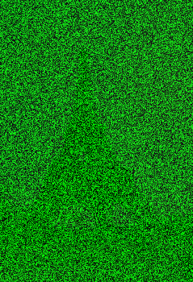

L'image suivante a été encodée.
L'objectif de ce TP est de découvrir de quelle image il s'agit.
Quelques informations :
Chaque pixel de l'image originale est exclusivement de couleur Rouge et Bleu.
Pour encoder l'image, pour chaque pixel, les valeurs du Rouge et du Bleu ont été divisées par 10. Cette action permet d'obscurcir l'image.
Pour encoder l'image, pour chaque pixel, la valeur du Vert a été générée de façon aléatoire (un entier entre 0 et 255). Cette action permet de "brouiller" l'image.
Par ailleurs, l'image originale est au format ppm. Vous pouvez télécharger l'image secrète (ImageSecrete.ppm) à partir de ce lien.
L'objectif sera donc de manipuler ce fichier, à partir des informations ci-dessus, pour retrouver l'image originale.
Ci-dessous, un programme permettant de reproduire un fichier Source.ppm à l'identique.
Il faut donc ecrire votre code dans un fichier.
L'enregistrer sous la forme prenom_nom_tpInfo1.py et l'envoyer, ainsi que la photo récupérée, dans un dossier compressé prenom_nom_tpInfo1.zip par courriel.